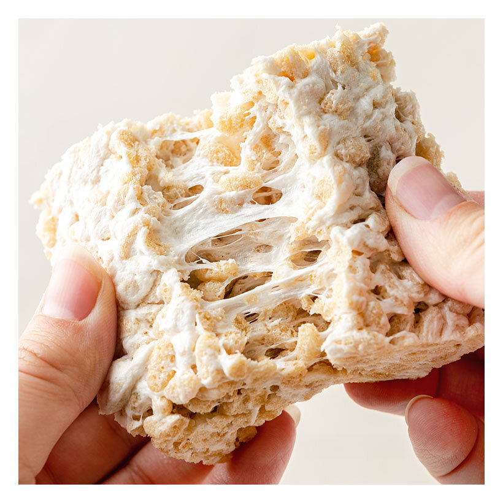

Vegan Crispy Treats
The OG best thing to do with boring ass cereal

Ingredients:
- One (10 ounce) package of Dandies® Mini Marshmallows
- 4 T vegan butter of choice
- 1 T water
- 4.5 cups Crisp Rice Cereal
Steps:
- In a large pot melt vegan butter over medium to low heat.
- Once melted add Dandies®, stirring constantly.
- After 3 minutes add 1 T water and continue stirring until melted together.
- Remove from heat
- Add crisp rice cereal to melted marshmallow mixture and mix to fully coat the cereal. Press mixture into a 9x9 pan
- Once cooled, cut into squares, and enjoy!
Go back to Main Page